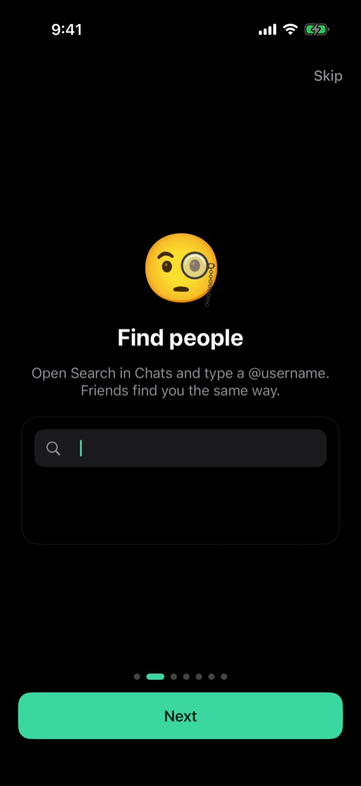

Adding a contact
How to add someone and what it changes
Find them
In Chats, open Search and type a @username or a public key. Someone next to you? Tap them above your chats.


Add to Contacts
Open the chat and tap the name at the top. Type a name and tap Add to Contacts. Or hold the chat in the list.
Direct needs you both
A direct P2P link opens only when each of you has the other in contacts. If only one does, the offer is refused and the chat stays on the relay.
Who can write to you
By default anyone can message you: Messages from Non-Contacts is on. Turn it off in Settings and messages from everyone else are dropped quietly. They don't arrive later. Free.
From the guide in Viper 1.5.34: Profile → Settings → Help → Guides. All posts